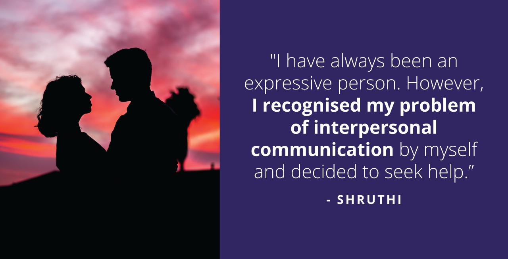
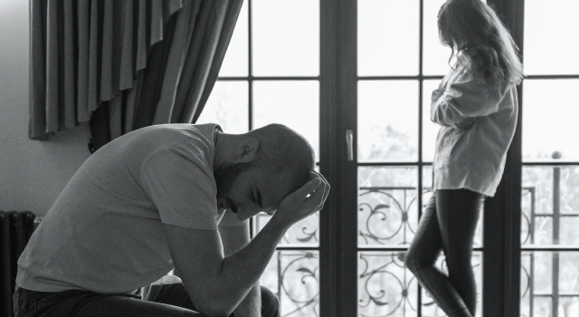
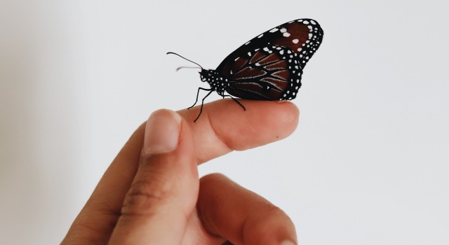

How Shruthi Spearheaded Her Issues around her Marital Life Through Therapy
Marriages have been around ever since civilization appeared. Humans have evolved with time and have laid down systems and institutions to nurture families and strengthen bonds.
These institutions are a mixture of phases, some sour and some sweet. Every relationship goes through different phases and not all of them are a bed of roses. This was the feeling of our warrior Shruthi, as she began talking to us about her struggles in maintaining a healthy relationship with her husband.
Shruthi is a voracious reader who has grounded herself in the tech and sales department. She identifies herself as an emotive person who enjoys making connections and meeting new people.
Her family has been her pillar of support, as she had supportive parents and a modern upbringing.
I come from a family who has always supported notions of mental health, and there has hardly been an issue while growing up regarding these aspects.”
She is newly married and mentioned having difficulty settling in with her husband. Shruthi describes how there are communication gaps, differences of opinion, and trouble understanding each other as their love languages were quite different. This would affect her overall spirit and leave her feeling angry most of the time.
“I signed up with YourDOST after an email popped up and decided to give it a shot to understand myself better and find ways to help myself out.”
As Shruthi began her path to self-realisation with her therapist Mithra and Ishitha, she could pay more attention to how much energy she spent in relationships and conversations. She pro-actively kept track of her emotions and inculcated a strong hold on them.
Speaking to my counselor Mithra felt like conversing with a friend, I felt extremely comfortable as she was vocal and friendly.”
Shruthi articulates how her decision to seek therapy helped her trail into the paths of self-improvement. As a result of therapy, she became more aware of her emotions and learned how to invest her energy wisely.
“My therapist and I were able to converse through my emotional aspects and speaking to her felt nurturing and empathetic.”
At this point, Shruthi reminisces over the conventions of mental health. She speaks of how the world lacks awareness of mental health. She describes how mental health organisations must take this message closer to those stuck in this rut of thought.
The resources that YourDOST counselors laid down for her helped her target her behaviour patterns accurately.
She was able to work on them and pro-actively work towards betterment.
“My counsellors identified how I could not take a passive approach. They insisted that I respect my mental space before I even handle things”.
She explains how she was able to handle her aggressiveness and transform into becoming more mindful of her anger and conversations.

The world should survive on hope and compassion. Shruthi’s story is one such example.
Shruthi feels that she is in a better place now and is witnessing growth in almost all spheres of her life. Shruthi rated her a 3 on 5, in terms of feeling better. We firmly believe the path to the golden 5 is just a few milestones away.
Shruthi’s Warrior Tips:
1. Stories of mental health must be heard and respected. It starts by creating awareness of the different types and techniques to deal with it on a larger scale.
2. You are the best judge of your emotions. Begin by spending some time and understanding them every day. It helps you get a step closer to becoming a new you.
3. Being expressive helped me tackle my problems. Stay confident and let things fall into place.